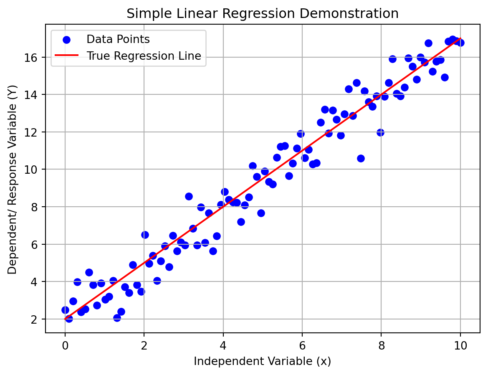

import numpy as np
import matplotlib.pyplot as plt
# Set random seed for reproducibility
np.random.seed(42)
# Parameters for the linear regression model
alpha = 2.0 # Intercept
beta = 1.5 # Slope
num_samples = 100 # Number of data points
# Generate synthetic data
x = np.linspace(0, 10, num_samples) # Independent variable (input)
e = np.random.normal(0, 1, num_samples) # Random error with mean 0
Y = alpha + beta * x + e # Dependent variable (response)
# Plot the data points
plt.scatter(x, Y, color='blue', label='Data Points')
# Plot the true regression line (without error)
plt.plot(x, alpha + beta * x, color='red', label='True Regression Line')
# Add labels and title
plt.xlabel('Independent Variable (x)')
plt.ylabel('Dependent/ Response Variable (Y)')
plt.title('Simple Linear Regression Demonstration')
plt.legend()
# Show the plot
plt.grid(True)
plt.show()